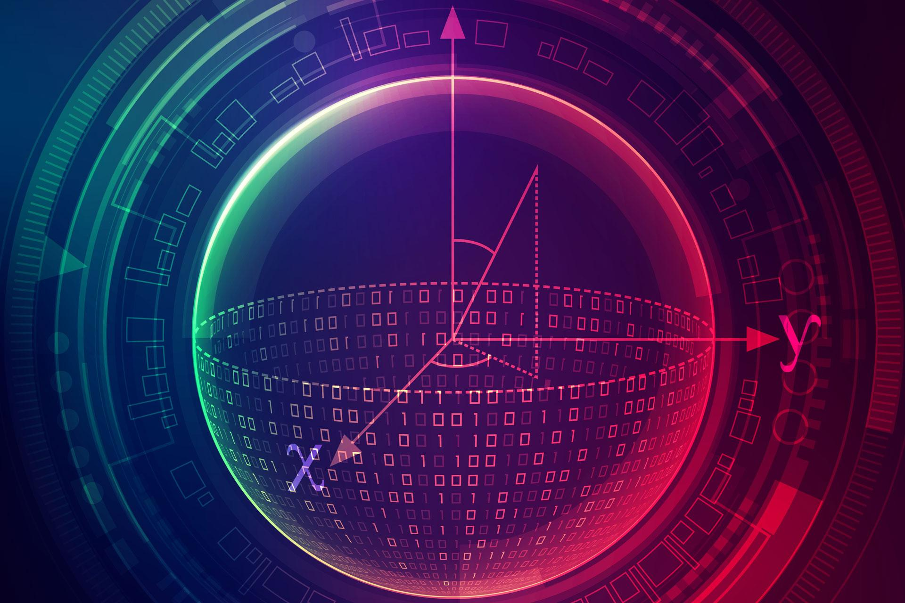

What is a Qubit?
Contents
What is a Qubit?¶

Photo Credit: © Jackie Niam – stock.adobe.com
On the last page, we spoke of bits that exhibited quantum properties. Do you remember what a bit is?
We said that bits were the basic units of information. We can therefore reason that a quantum bit, also called a qubit, is the basic unit of quantum information.
And what is Quantum Information? To put it simply, Quantum Information is the information presented by the state of a quantum object or system.
From Quantum vs Classical, we learnt that a state is simply a description of something.
Just as the state of a classical bit can be 0 or 1, the state of a qubit may also be described. The symbol used to represent the state of a qubit is this: \(|\Psi\rangle\) . This is the Greek letter Psi …the ‘p’ is silent. So whenever you see ‘\(|\Psi\rangle\)’, you know that whatever follows is a description of the state of some quantum system.
Writing the State of A Qubit¶
The most general way to describe the state of a qubit is as a superposition of the state “0” and the state “1”. In Quantum Mechanics, we represent the state “0” as \(|0\rangle\) and the state “1” as \(|1\rangle\). We can then write the state of a qubit as:
But what is \(\alpha\) and \(\beta\) ? Alpha written as \(\alpha\) is the first letter in the Greek alphabet, whereas beta written as \(\beta\) is the second letter. With regards to qubits, \(\alpha\) is a number that tells how much of the qubit is in state \(|0\rangle\), and \(\beta\) is a number that tells how much of the qubit is in state \(|1\rangle\). For example, if a qubit is entirely in the state \(|1\rangle\) then \(\beta=1\), which makes \(\alpha=0\).
Note
\(\alpha\) and \(\beta\) are not usually ordinary numbers like what we are familiar with, i.e. 0,1,2,3… They are what we call complex numbers, or imaginary numbers. Complex numbers are the most general types of numbers and we can use these numbers to represent things in multiple dimensions instead of the ordinary one-dimensional number line. It is also gives information on the angles between the real and complex parts of a vector.
If you wish to learn more about complex numbers, there’s an excellent video series by Welch labs on YouTube that you can check out: Imaginary Numbers Are Real
Representing A Qubit¶
We can even draw the state of a qubit using what is known as the Bloch sphere.

Photo Credit: VectorStock
With the Bloch sphere, the qubit’s state is shown as an arrow that points to a spot on the sphere’s surface. The two angles that are used to make the arrow point in that particular direction also allows us to characterize the qubit’s state, i.e. it tells us \(\alpha\) and \(\beta\).
For example, if a qubit is in the state \(|0\rangle\), it points to the north pole or to the top of the Bloch sphere. Since the north pole is always the starting point, the two angles needed to make the qubit point in that direction are both \(0^\circ\).
If a qubit is in the state \(|1\rangle\), then it points to the south pole or the bottom of the Bloch sphere, and one of the angles needed to make the qubit point in that direction becomes \(180^\circ\).
Let’s summarize.
A qubit is the basic unit of quantum information.
Quantum Information is what we know of the state of a quantum object or a quantum system.
The most general way to write the state of a qubit is: \(|\Psi\rangle=\alpha|0\rangle+\beta|1\rangle\).
The numbers \(\alpha\) and \(\beta\) indicate how much of the qubit is in state \(|0\rangle\) and how much is in state \(|1\rangle\).
One way to draw the state of a qubit is with the Bloch sphere. The direction that the arrow points denotes the qubit’s state.
We can note this direction with angles in addition to the complex numbers \(\alpha\) and \(\beta\).
Short Quiz¶
Try to answer the following question on your own, then click to reveal the answer.
Is \(|\Psi\rangle=|0\rangle\) a superposed state?
No. This is not a superposed state.
Remember that a qubit is in superposition if it is in some combination of “0” and “1”.
If the qubit is only in the “0” state then it is not in superposition.